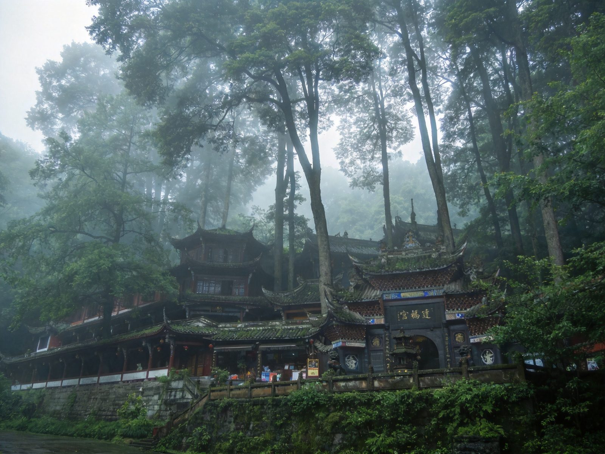
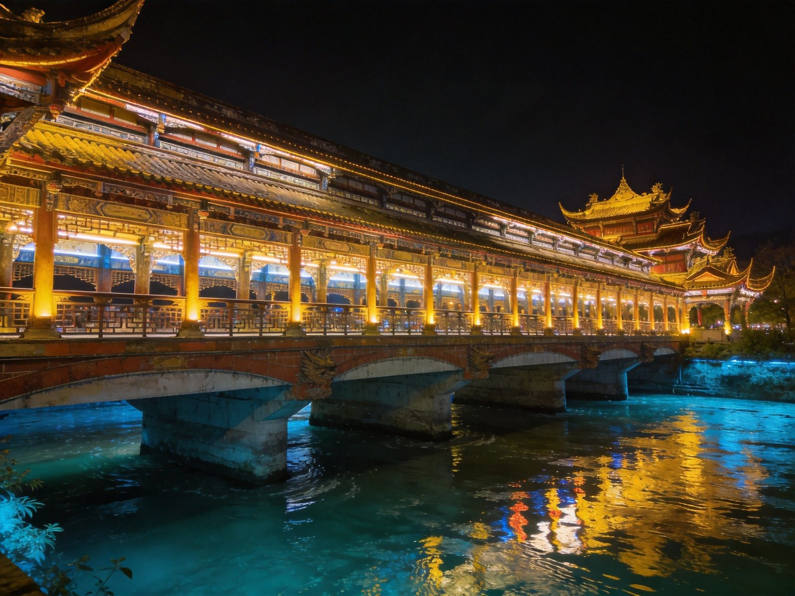
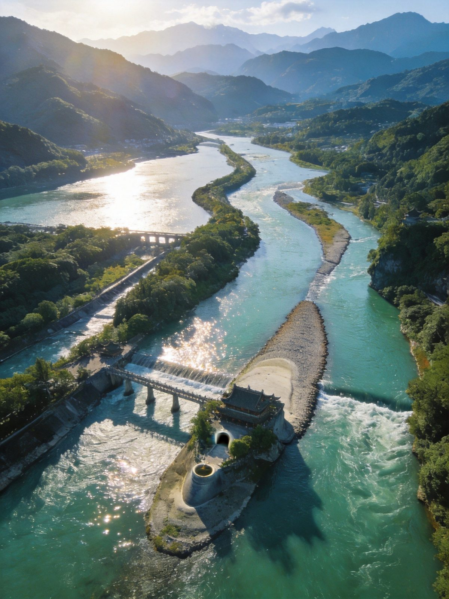

水利工程
鱼嘴 · 都江堰分水鱼嘴
形似鱼嘴的分水堤坝，把奔腾的岷江分为内江、外江。巧妙利用地形与水流「四六分水、二八分沙」：洪水期自动把多余水量排向外江，枯水期把水导向内江，堪称古代无坝引水工程的巅峰之作。
👍 必去理由：都江堰第一打卡点。站上鱼嘴方能直观理解「治水不等于筑坝」的东方智慧，涨水期气势尤为震撼。
成都一小时朋友圈里的「世界自然与文化双遗产」：都江堰是两千多年前的古代水利工程——鱼嘴、飞沙堰、宝瓶口至今仍在分水治沙，被誉为「世界水利文化鼻祖」；旁边的青城山是道教发源地，素有「青城天下幽」之称，群峰环翠、道观清幽。门票都江堰80元、青城山前山80元/后山20元，离成都 1 小时即可达。本文含水利1日/山水2日双方案、二王庙安澜桥、青城问道、交通住宿、美食预算、避坑全讲清。
核心策略：从离堆公园进，沿「宝瓶口→飞沙堰→鱼嘴→安澜索桥」路线一路看懂古人治水智慧，清晨出发午后即可返程。
核心策略：第一天看都江堰水利，第二天上青城山问道，把「治水智慧+道教文化」一次性体验完整，动线顺滑。
把都江堰三大水利部件与青城山道教精华单独拎出来说清楚——值不值得去、怎么玩、怎么理解。

形似鱼嘴的分水堤坝，把奔腾的岷江分为内江、外江。巧妙利用地形与水流「四六分水、二八分沙」：洪水期自动把多余水量排向外江，枯水期把水导向内江，堪称古代无坝引水工程的巅峰之作。
👍 必去理由：都江堰第一打卡点。站上鱼嘴方能直观理解「治水不等于筑坝」的东方智慧，涨水期气势尤为震撼。

位于鱼嘴与宝瓶口之间的低矮溢流堰，涨水时利用「弯道环流」原理将大量泥沙、卵石排入外江，仅少量净水进入宝瓶口。它与鱼嘴、宝瓶口并称都江堰三大主体工程，共同守护成都平原两千多年。
👍 必去理由：与宝瓶口相邻、肉眼可辨「治水分沙」机制。摄影爱好者可在此拍江水奔涌的动感画面。

横跨岷江的古老竹索桥，因当年为方便两岸通称「安澜桥」而闻名，被誉为「中国五大名桥」之一。站在晃动的桥面上俯视江水奔流、远眺二王庙与玉垒山，是都江堰最出片的经典机位。
👍 必去理由：过桥去往二王庙的必经之路。桥身晃动带来独特体验，傍晚灯光亮起后格外好看。
群峰环翠、清幽深邃的「青城天下幽」。山间建福宫、天师洞、上清宫等道观鳞次栉比，相传张道陵在此创立五斗米道，是中国道教发源地之一。拾阶而上，松柏苍翠、道观清静，自有一番问道意境。
👍 必去理由：问道+徒步双体验。前山道观密集、文化浓度高，适合想感受道教氛围与清幽山景的游客。
都江堰青城山距成都仅约60公里，交通十分便捷，成都出发基本1小时内可达。
| 方式 | 🚄 城际/高铁 | 🚗 自驾 | 🚌 公交/景区车 | 🚐 旅游直通车 |
|---|---|---|---|---|
| 时长/成本 | 成都犀浦→离堆公园/青城山站约 23–30min，票价约 10 元 | 成都→都江堰约 60km、约1h | 景区观光车衔接各景点/登山口 | 成都市区旅游专线直达，约1.5h |
| 适合人群 | ✔ 最推荐：快、便宜、直达景区旁 | 自驾党、顺路玩乐山/周边 | 已到景区后的内部接驳（必用） | 不想折腾换乘的游客 |
| 注意 | 犀浦—离堆公园为城际，出站步行即达都江堰景区 | 节假日景区周边拥堵、停车难 | 青城山到登山口需换乘景区车 | 班次相对固定，需按时刻表 |
| 💡 一句话建议：首选 成都犀浦—离堆公园/青城山城际高铁——20多分钟直达、票价仅约10元，出站即景区/登山口，性价比之王。 | ||||
住都江堰市区方便两景区往返，住青城山脚下更幽静，三档供参考（2 人房计）。
都江堰集聚川西坝子地道风味，青城山脚的道家素食也别具一格。
含 1–3 人出行说明；区间为保守–宽松，实际以淡旺季与选择为准。
| 项目 | 水利1日版 | 山水2日版 |
|---|---|---|
| 大交通（成都往返人均） | 约 30–80 | 约 60–120 |
| 门票 | 都江堰 80 | 都江堰80+青城山80 |
| 观光车/索道 | 约 20–80 | 约 40–160 |
| 住宿 | —（当日往返可选） | 1 晚 100–480 |
| 餐饮 | 约 60–120 | 约 150–300 |
| 合计 · 人均 | 约 200–400 | 约 450–1100 |